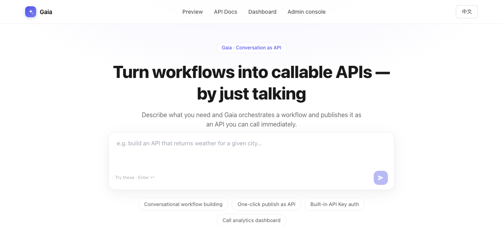
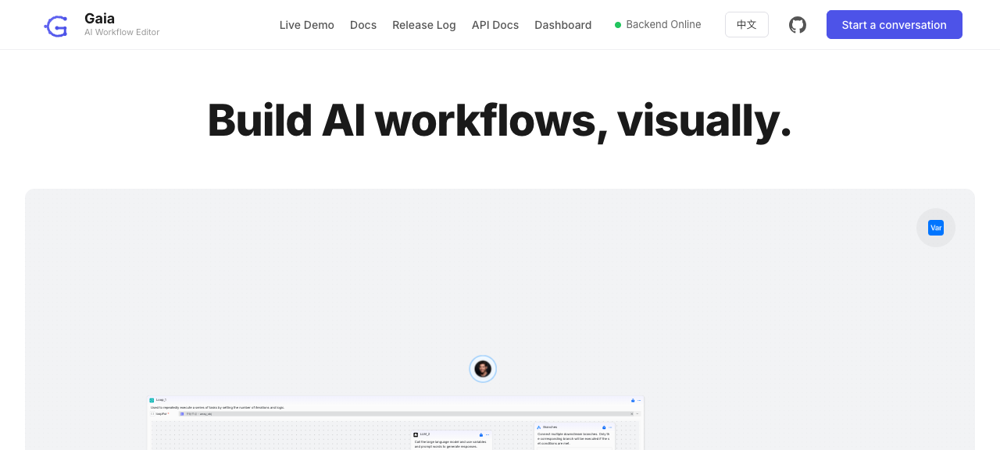
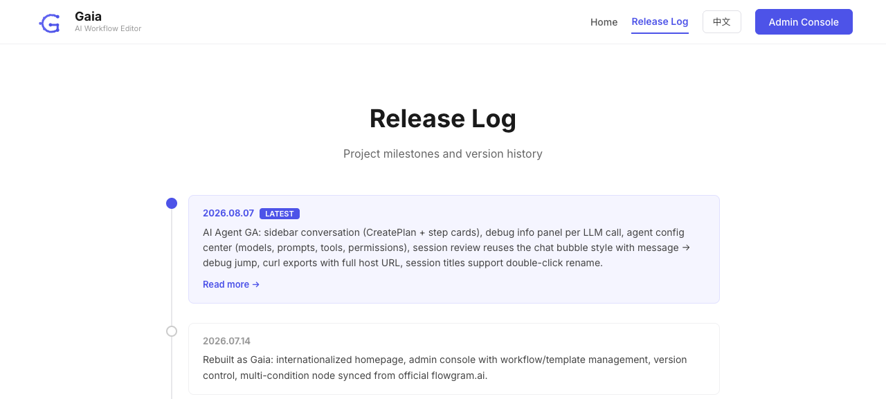
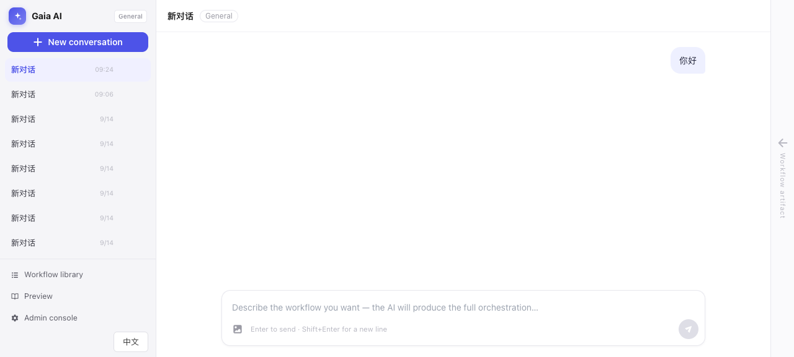

以「从 / 出发能走到的每一个页面」为范围，逐条核对跳转、返回、状态反馈、文案与视觉规范。证据来自源码逐行核对 + 真实浏览器逐页截图（桌面 1440×900 / 移动 390×780）。
/c/:key、/editor/:code）没有任何回到站点其他页面的出口。功能都在，但用户每跨一次页面边界，就要重新认一次界面。
从 / 出发点击可达（实线）与实际存在但不可达（虚线）。
| 页面 | 用哪套导航壳 | 从 / 可达 | 能回到站点其他页 | 入口文案 |
|---|---|---|---|---|
/ 落地页 | ContentTopNav（60px） | — | 是 | — |
/c/:key AI 工作区 | SessionRail 左栏（252px） | 提交首句后 | 仅 3 个二级入口 | Conversation |
/preview 预览 | Home 自绘 nav（64px） | 是 | 是（另一套） | Preview |
/docs API 文档 | ContentTopNav | 是 | 是 | API Docs |
/dashboard 调用看板 | ContentTopNav | 是 | 是 | Dashboard |
/admin/* 管理后台 | AdminLayout 侧栏（240px） | 是 | 是（侧栏底部） | Admin console |
/editor/:code 专家模式 | EditorHeader 自绘 | 是 | 只有 ← 返回 | — |
/template-editor/:code | TemplateEditorHeader | 否（仅后台内） | 只有 ← 返回 | — |
/releases 发布日志 | Releases 自绘 nav | 否（孤岛） | 是 | —（全站顶栏无此入口） |
| 无效 URL | — | 静默改写为 /，无 404 页 | — | |


这四个直接影响「用户能不能顺畅走完一遍」，且都有一致性/可达性上的硬伤。
点一下「Preview」，顶栏从 4 项变 7 项、品牌标识从渐变方块变成 logo.svg、CTA 圆角从 8 变 6、还凭空多出 GitHub 入口与「Backend Online」状态灯。更麻烦的是新顶栏里同时出现 「Docs」和「API Docs」两个入口：前者是页内滚动到「如何本地启动」，后者才是路由 /docs 的对外 API 文档 —— 用户无法从字面区分。
pages/Home.tsx:160-331 自绘 nav（height 64 / padding 0 48px）；components/ContentTopNav.tsx:72（height 60 / px-4 sm:px-6）。Home.tsx:210 用 nav.docs 指向页内 #docs，Home.tsx:240 用 nav.apiDocs 指向路由 /docs。而 LandingPage.tsx:7 的注释明确写着「顶部导航与预览/文档/看板共用 ContentTopNav」—— 实现与注释相反。建议方向 把 /preview 接回 ContentTopNav，把「Live Demo / Release Log」收进页面内的次级锚点或内容区；全站只保留一个 /docs 语义。
固定 padding: 0 48px + 全内联样式 + 零断点。390px 宽下：品牌副标题被压成竖排、「Live Demo」与「Demo」文字重叠、「Release Log」折成两行、GitHub 图标与语言开关被挤出视口、主 CTA「Start a conversation」完全消失。这一页在手机上不可用。
pages/Home.tsx:167 padding:'0 48px'，整页无任何 md: / sm: 断点类（只有 hidden lg:block 用于隐藏 API Docs / Dashboard，导致 lg 以下这两个入口彻底消失且无抽屉替代）。建议方向 统一用 ContentTopNav（它已内置移动端抽屉），即 P0-1 的修复顺带解决本项。
这正是产品的核心链路，但 /c/:key 与 /editor/:code 都没有站点级导航。工作区左栏只有「Workflow library / Preview / Admin console」三个二级入口，没有 API 文档、没有调用看板、没有回首页，且已发布的 API 在哪里看完全无从得知；左栏品牌区是不可点击的 <div>，连"点 logo 回家"这条最通用的习惯都没有。编辑器更极端，唯一出口是「← 返回」，而它的落点还会根据来源漂移（见 P1-4）。
ai-workspace/components/SessionRail.tsx:34-38（entries 只有 3 项）；SessionRail.tsx:53 品牌是 <div> 无 onClick（对比 ContentTopNav.tsx:73 的 BrandMark 是可点 button）；editor.tsx:460-580 EditorHeader 只有 Back / 历史版本 / 语言 / Publish / Save。建议方向 工作区与编辑器共用同一个「轻量站点顶栏」（或至少把 /docs、/dashboard、/ 补进 SessionRail 的二级入口并让品牌可点回首页）。
自动命名逻辑写在 ChatComposer.submit() 里，但只要消息不是从这个输入框敲的就不会触发：首页首句承接（AiWorkspace 里 sendMessageRef.current(prompt)）和欢迎页建议卡（ChatWelcome.onPick → sendMessage）都绕过了它。而这两条恰恰是「以对话为核心」最主要的进入方式。实测截图里 8 条会话标题全是「新对话」，用户无法找回任何一次对话。
chat/ChatComposer.tsx:156-158 是唯一 renameSession 触发点；ai-workspace/AiWorkspace.tsx:101-103 与 AiWorkspace.tsx:224 直接调 sendMessage。运行态证据：/api/agent/session/list 返回标题均为「新对话」。建议方向 把「首条消息 → 会话命名」下沉到 AgentContext.sendMessage（一处生效，所有入口都对），而不是留在某一个输入框组件里。
这些不阻断流程，但每一次跨页都在削弱「这是一个产品」的感觉。


ContentTopNav 与 SessionRail 用的是手写 SVG 渐变方块（星形），而 Home / Releases / AdminLayout 用的是 public/logo.svg（蓝色 G）。这不是"同一个 logo 的不同尺寸"，是两个不同的标识。名字也分三种：Gaia / Gaia AI / Gaia · Admin。副标题只有预览页和发布日志页有。
ContentTopNav.tsx:24-46 与 SessionRail.tsx:63-99（内联 SVG + gradient）vs Home.tsx:174 / Releases.tsx:84 / AdminLayout.tsx:139（<img src={publicPath('logo.svg')} width=48>）。建议方向 抽一个 <BrandMark size="lg|sm" /> 统一出口，删掉或弃用其一。
/admin/workflows 在顶栏叫「Admin console」、在后台侧栏叫「Workflows」、在会话左栏叫「Workflow library」。最严重的是会话左栏那条：文案写「Admin console」（管理后台），齿轮图标，落点却是 /admin/agent-config（Agent 配置二级页）——用户以为进后台首页，实际被丢进配置页。同理 /admin/sessions 侧栏叫「Session Review」、页头叫「Agent Session Review」；/preview 导航叫「Preview」、页内 H1 是「Build AI workflows, visually.」。
ContentTopNav.tsx:21（landing.admin）、AdminLayout.tsx:151（admin.workflows）、SessionRail.tsx:35（workspace.workflowLibrary）、SessionRail.tsx:37（workspace.adminConsole → /admin/agent-config）。建议方向 建一张「路由 → 唯一名称」的映射表，所有入口从表里取词；导航栏名称与着陆页 H1 允许不同，但同层入口必须同名。
落地页自己写 height:100vh; overflowY:auto；内容页走 <ScrollPage>；预览页靠内层 minHeight:100vh 自然流。而且 /docs 与 /dashboard 是双重 ScrollPage 嵌套（App 包一层，组件内部又包一层），sticky 顶栏挂在里层，滚动条行为与外层不一致。
App.tsx:48-51 + ApiDocsPage.tsx:71/162/171/191 + DashboardPage.tsx:111（均为组件内再包一层）；LandingPage.tsx:53-60（自绘滚动容器）。建议方向 只保留 App 层一处 ScrollPage，页面内不再包；落地页也改用它。
backTo 只认一种来源 token：只有从后台工作流管理进来才回后台，其它一律回 /。所以从 API 文档的「去发布」、或从工作区产物面板的「在编辑器中精修」进入编辑器后，点返回都会被打到落地页 —— 用户的上下文（他在看哪个 API 的文档）被丢掉。
editor.tsx:293 const backTo = location.state?.from === '/admin/workflows' ? '/admin/workflows' : '/'；只有 admin/WorkflowManagement.tsx:162 传了 state.from；ApiDocsPage.tsx:176、artifact/ArtifactPanel.tsx:136 均未传。建议方向 改成 navigate(-1) 或统一由 state.from 携带来源，缺省回落到 / 而不是只有一种白名单。
<button onClick>，不是链接全站 43 处 navigate(...)，只有 5 处 <NavLink>（都在后台侧栏）。后果：不能 Cmd/Ctrl+点击新开标签页、不能右键复制链接、hover 看不到目标地址，屏幕阅读器也读不出"这是个链接"。对一个"讲 API 调用文档"的产品来说，用户想分享一条文档链接的路径是不通的。
ContentTopNav.tsx:80-91/124-135、Home.tsx:184-256、SessionRail.tsx:125-158 全部为 button；唯 5 处 NavLink 在 AdminLayout.tsx:149/153/157/161/167。建议方向 导航项与卡片入口换成 <Link>/<NavLink>，保留样式。这是低成本、高收益的一项。
这一页没有 import 全局 t()，而是自建了一个本地 t 对象；语言状态默认值写死 'en'，而全站默认是 zh-CN（按浏览器语言判定）。结果是：中文用户从预览页点进「Release Log」，会看到一页英文，且页面内的语言开关与全站语言互不同步——在同一浏览器里切一次语言，两处状态就永久分裂了。
pages/Releases.tsx:37 useState<Lang>('en')；Releases.tsx:39-52 本地 t 对象；Releases.tsx 未 import ../i18n；对比 i18n/index.ts:54-64。建议方向 改用全局 useLanguage()/t()，release 条目文案进词典。
tailwind.config.js 没有配置 fontFamily，所以 /、/docs、/dashboard 用浏览器默认字体；/preview、/releases、/admin 声明 'Inter', -apple-system…；而 /preview 和 /releases 还会在挂载时动态往 <head> 插一个 Google Fonts <link>，离开时移除。也就是说同一段中文/英文文字，在首页和在预览页是不同字体；预览页首屏还会出现字体替换闪烁。另外内网/被墙环境下这个外链会明显拖慢首屏。
tailwind.config.js（theme.extend 为空）；Home.tsx:116-124、Releases.tsx 同款 document.head.appendChild(link)。建议方向 在 tailwind theme 里统一 fontFamily，字体改为本地自托管或直接用系统字体栈。
逐条都很小，但它们是"完成度"的主要来源。
| # | 问题 | 证据 / 位置 |
|---|---|---|
| 1 | 全站零焦点样式。没有任何 focus-visible: 类，全局也无自定义焦点环；落地页输入框还显式 outline-none。键盘用户完全看不到焦点位置（唯一例外是聊天气泡操作栏的 focus-within）。 | LandingPage.tsx:97 outline-none；全仓 focus:ring/focus-visible 匹配数为 0；chat/theme.tsx:77 是唯一一处 |
| 2 | 首页发消息没有加载反馈。busy 只把按钮降到 40% 透明，无 spinner、无「正在创建会话」文案；createSession 失败被空 catch 吞掉，用户只看到"点了没反应"——这正是上一轮被误判成前端 bug 的根源。 | LandingPage.tsx:39-42, 104-105 |
| 3 | 导航缺「当前位置」。首页时四个导航项全不高亮（因为首页自己不在导航里）；预览页那套导航里也没有「Preview」项。用户在任何一页都很难确认自己在哪。 | ContentTopNav.tsx:59 + 截图 A |
| 4 | 同一句文案用了两次：landing.tagline「Gaia · Conversation as API」既是 hero 顶部徽章，又是页脚文字。移动端截图上两处同屏可见。 | LandingPage.tsx:73, 130 |
| 5 | 输入提示文案两套：首页「Try these · Enter ↵」（把"示例"和"键盘"拼一行），工作区「Enter to send · Shift+Enter for a new line」。同一件事两种说法，且首页没说 Shift+Enter 换行。 | LandingPage.tsx:101 vs workspace.inputHint 词典 |
| 6 | 示例 chips 换行不齐：4 个 chip 在 1440 下排成 3+1，在 390 下排成 2+1+1，没有等宽或栅格约束；点击只填词，不聚焦也不发送。 | LandingPage.tsx:117-127 + 截图 A / 移动端截图 |
| 7 | 原生 <select> 混在自绘控件里：看板的「API 过滤」是浏览器默认下拉（原生箭头、原生焦点环），同一行旁边却是自绘的 Segmented 分段控件。 | DashboardPage.tsx:146-158 |
| 8 | 颜色语义重叠：全站主色是 #4d53e8，但编辑器主 CTA 之一「Test Run」是实心绿色（事实上的第二主色）；看板上「成功率 86%」用红色（阈值 90%），于是红色同时表示"失败"和"未达标"两种不同含义。 | editor.tsx Test Run 按钮；DashboardPage.tsx:207 successRate >= 0.9 ? GREEN : RED |
| 9 | 时间格式三套且未本地化：看板「Updated at 9:23:58 AM · 2026-08-17 ~ 2026-09-15」（硬编码 toLocaleTimeString()，中文界面下出现 AM/PM）；会话列表在当天显示 09:24、往日显示 9/14；后台表格用 2026-08-06 23:57。 | DashboardPage.tsx:60；截图 D / F |
| 10 | loading 与 empty 文案混用：dashboard.listEmpty（「暂无调用数据」）被当作 API 文档页的加载中文案，页面上会短暂出现「No call data yet…」而其实只是在加载。 | ApiDocsPage.tsx:80, 164 |
| 11 | 空态 CTA 文案与落点语义不符：API 文档列表为空时，按钮文案取的是 preview.title（「Preview」）并跳到 /preview。正确引导应是"去对话创建一个工作流"。 | ApiDocsPage.tsx:85-91 |
| 12 | 编辑器里用裸 <a href> 做内部跳转，点击会整页重载，丢失 workflowDocumentStore 内存态与当前 Agent 会话（项目约定明确要求同标签页内 client-side 跳转）。 | editor.tsx:614 <a href={`/docs/${...}`}> |
| 13 | 无效 URL 静默重定向：* 路由直接 Navigate to="/"，地址栏被改写、无 404 提示。用户打错一个字母只会"莫名其妙回到首页"，无法判断是自己错了还是页面没了。（已实测：访问 /this-page-does-not-exist 后 location.pathname 变成 "/"） | App.tsx:68 |
| 14 | 竖排「Workflow artifact」是全站唯一的竖排交互，且收起态只靠一个 6px 小圆点暗示"里面有内容"，hover 才出 tooltip。这是整个产物面板（产品最核心的产出物）的唯一常驻入口。 | AiWorkspace.tsx:251-288 |
| 15 | 42 个 i18n 死 key + 4 个缺失 key。缺失的 4 个（Add condition / Add branch / Add Condition / Add Branch）走 flowgram 的 I18n.t，词典里根本没登记，中文环境下会直接显示英文；而词典里真正对应的 condition.addCondition / condition.addBranch 从未被引用。死 key 里 preview.* 11 个有 10 个是死的。 | nodes/multi-condition/condition-inputs/index.tsx:116,161；nodes/branches/branch-inputs/index.tsx:172,205 |
| 16 | 商品化文案硬编码中文：产物面板的节点类型映射表、会话审查的「关闭调试/调试面板」、Copilot 侧栏的三个提示词模板（「解释一下节点「X」的作用…」）都是写死的中文 → 英文界面下仍是中文。而词典里已有 node.label.* 未被使用。 | ai-workspace/artifact/ArtifactPanel.tsx:30-49, 94；ai-workspace/components/CopilotSidebar.tsx:167-169；pages/admin/SessionReview.tsx:561 |
| 17 | 孤儿锚点与孤岛页面：Releases.tsx:154 的 id="releases" 无任何跳转指向；/releases 在全站统一顶栏里没有入口；nav.admin 是死 key。 | 见第 1 节导航表 |
上面 28 条里有 20 条以上其实是「缺一套统一 token」的表现。先把下面这几件事定死，剩下的是替换。
| 维度 | 现状 | 建议基线 |
|---|---|---|
| 品牌标识 | 4 种（SVG 渐变方块 / logo.svg / Gaia AI / Gaia · Admin） | 1 个 <BrandMark size />，两种尺寸 |
| 站点顶栏 | 3 套（ContentTopNav / Home nav / Releases nav） | 1 个 ContentTopNav，高 60px，含移动抽屉 |
| 主 CTA | 圆角 6 / 8 / 10 / 12 混用 | 圆角 8，#4d53e8，唯一实心主色 |
| 警告色 | 绿既是"成功"又是编辑器主 CTA；红既是"失败"又是"未达标" | 语义色只用于状态；阈值不改变颜色语义 |
| 字体 | 系统默认 / Inter(网络加载) / 编辑器自带 | tailwind theme 统一 fontFamily，不依赖外网字体 |
| 滚动容器 | 3 套，其中 2 处嵌套 | 只在 App 层一处 <ScrollPage> |
| 页面跳转 | 43 处 button+onClick | 导航一律 <Link>，可新开/可复制 |
| 时间格式 | 3 套，含硬编码 AM/PM | 1 个 formatTime()，随 locale |
/preview、/releases 接进来，修掉双重 ScrollPage。这一批做完，全站观感问题会掉一大半。